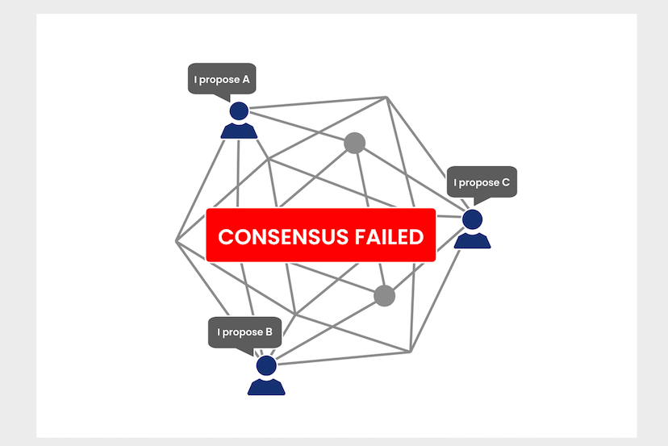
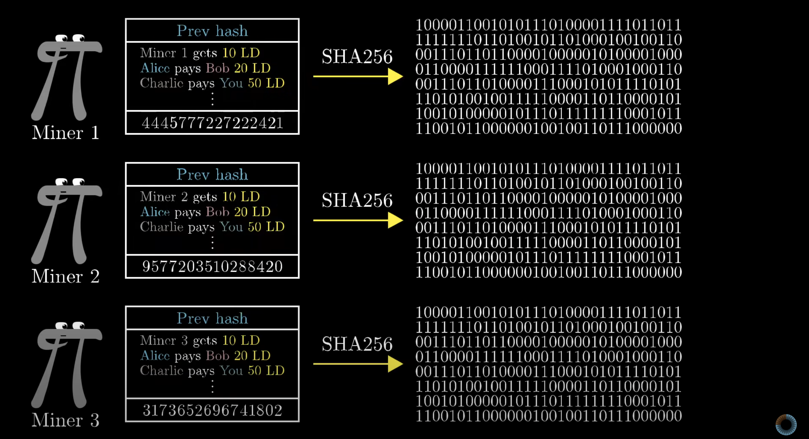
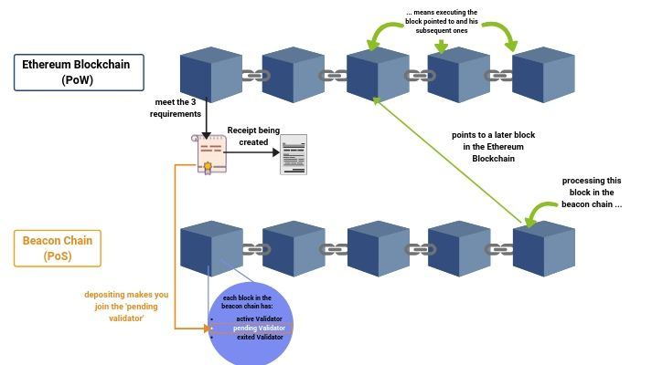
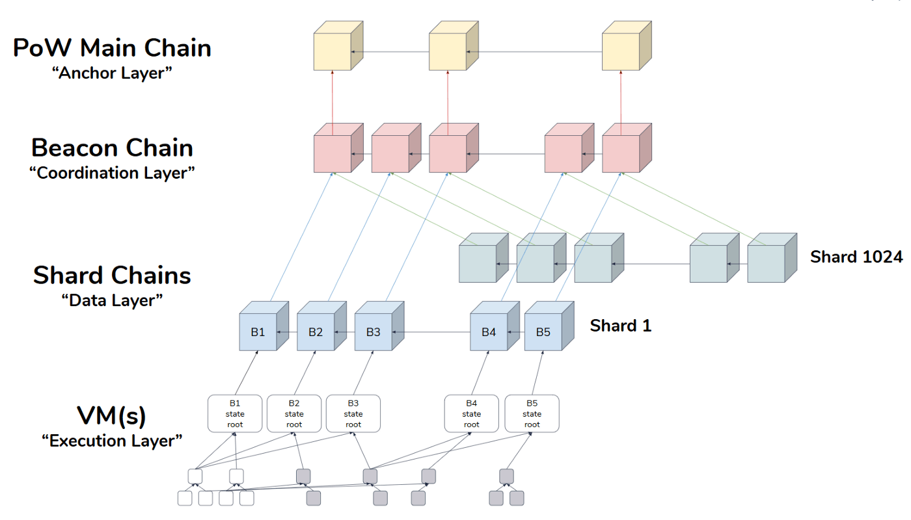
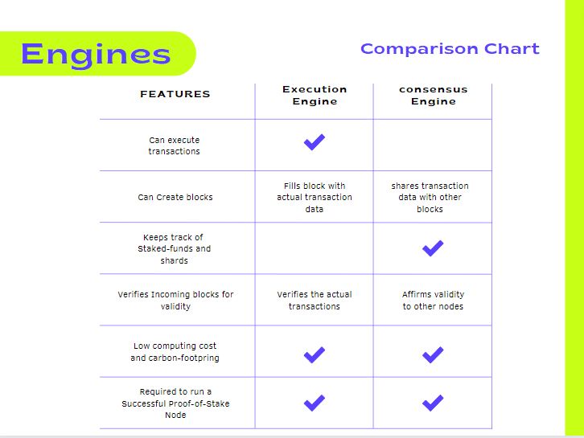
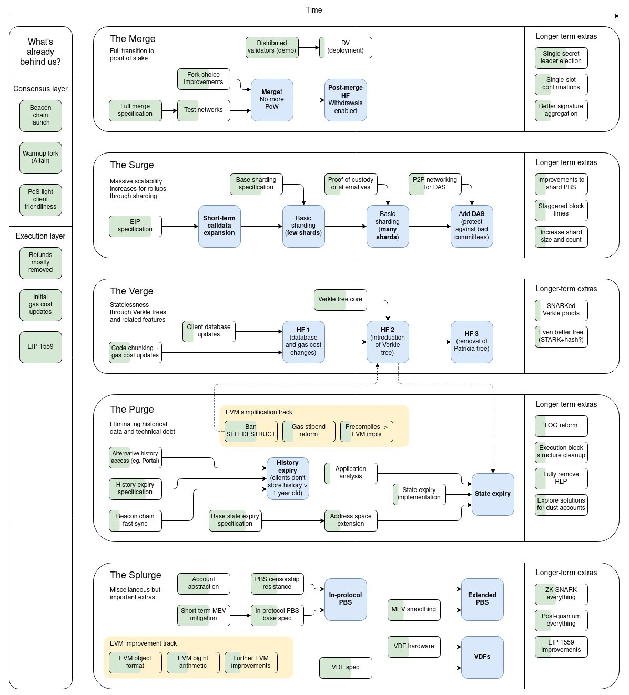

The Merge¶
Since Ethereum was launched in 2015, the dream of moving to proof-of-stake has been in the minds of every core-developer. In Q2 of 2022, it will become a reality, as Ethereum undergoes “the merge”. It will be the culmination of years of work by hundreds of people, and once completed will go down as one of the greatest achievements in the history of cryptocurrency. Once finished, Ethereum will have completely moved from a “Proof of Work” based consensus mechanism, to the more secure, scalable, and energy-efficient “Proof of Stake”. It’s importance cannot be overstated, as proof-of-stake is a necessary move to ensure the long-term sustainability of the network. While many have lamented the incredibly-slow development process, ensuring the utmost care and security during the merge-process is paramount.
The road thus far¶
Recall that all cryptocurrencies rely on something known as a “consensus mechanism”.
Consensus Mechanism: A software algorithm used in the blockchain to maintain the security and continuity of the network. Without a centralized authority to keep track of records, the task falls to each member of the network. In order for any change to the network to occur, and new blocks/transactions be confirmed, each member of the network must agree on it. How they come to this agreement is the subject of heavy research.
If you haven’t read my other article on Proof-of-Work and Proof-of-Stake, I highly recommend you do so, as it includes a detailed explanation of how two of the most popular consensus-mechanisms work.

When Ethereum was launched in 2015, a decision was made to operate under “Proof of Work”. This was done for a variety of reasons, one of which being time constraints. At that time, no coin had been launched that included a successful Proof-of-Stake algorithm, so to build one would present significant hurdles and delay the network launch by perhaps years. However, the core engineers (Vitalik Buterin, Gavin Woods, etc.) knew that utilizing Proof-of-Work was not sustainable in the long-term, and vowed to revisit the idea in the future. Since then several coins such as Cardano, Algorand, and Tezos have all been created utilizing successful proof of stake mechanisms. This advancement in our understanding of these algorithms has made the dream of proof-of-stake a reality. The issue was how to implement it.

When a company wants to update their servers, they do it in the middle of the night. Upgrades are scheduled in times when the fewest amount of people will experience downtime, using a complicated system of distributed-servers. It is estimated that for every minute Amazon.com is down, it loses $66,000. Going down for an hour in 2018 cost the company nearly $100 Million. As a result, preventing any downtime is of the utmost importance, whether it’s from a bug, or intentional.
A decentralized-blockchain cannot be turned off. Since no single-entity controls it, as long as one person is mining, it will keep producing-blocks indefinitely. Even if you could turn it off, doing so would be potentially cataclysmic. Millions of people and hundreds of billions of dollars are locked in Ethereum, and making that inacessible for even 1 minute would have ripple effects throughout the ecosystem. Faith in the system is what upholds it, and the faith in the network’s security and stability would plummet immediately.
The challenge therefore lies in the question “how do you completely replace the architecture that allows your applications to run, with no central authority, and 0 downtime?”. Ethereum blocks are created roughly every ~13 seconds. Without missing any blocks, the network needs to seamlessly replace its block-production-engine. This is an engineering challenge with unparalleled difficulty. It has be likened to replacing the engine of an airplane while it is still flying. No coin has ever attempted it, and when completed will be heralded as a one of the most significant milestone in the history of cryptocurrency.
The Merge¶
The Infrastructure¶
In December 2019, Ethereum launched what was known as The Beacon Chain. This is a blockchain running in parallel to the Ethereum blockchain. Every 12 seconds a new block is formed using proof-of-stake-rules, where someone is randomly assigned the task and privilege of creating a block. It is responsible for keeping track of stakers, as well as other metadata about the chain itself. However, the blocks it has been creating have been empty. It’s purpose pre-merge is only to establish a stable consensus, and to act as a testing ground.
In the current system people are running nodes on the current Ethereum-Chain (miners), we call these execution nodes, because they are processing the transactions themselves. Think of this as “Eth1” (Eth1/2 nomenclature has been deprecated and is no longer used, but i’ll be using it to help with simplicity of the explanation). However, they also establish consensus on the main-chain. One program does everything. Meanwhile, others are running beacon-chain nodes (Stakers), referred to as consensus nodes. They are currently working independently on the beacon-chain, and do not process transactions.
The Merge Proper¶
The merge is the brining those two engines together, into the same system, by the same person. When the merge occurs, the blocks created by the computational-engine (miners running execution nodes) will be passed to the consensus engine (staker-operated consensus nodes), meaning beacon chain blocks are no longer empty.
Currently, miners are the ones creating blocks. They take a bunch of pending transactions, process them, and then mine a new valid-block. If you recall from earlier, a block is considered valid only if it has included a specific value (nonce) to meet a condition. This is mining, the computation done to find a valid nonce. If the block doesn’t contain one, other nodes will reject it. The merge is simply the removal of that validity condition to create a new block. At a certain block-number (time in the future), a condition will trigger that says “a valid nonce is no longer needed for a valid-block to be created”. The next block afterwards will be created without a valid nonce, but with a bunch of valid transactions.
The Eth1-node (execution engine) processes a bunch of transactions, but instead of looking for a nonce afterwards, it will pass that grouping of transactions (a block) to its neighboring consensus engine. It no longer has to expend the massive amount of energy needed to mine a valid block under Proof-of-Work, because it is secured by the beacon-chain, using Proof-of-Stake. Mining was always a way to help establish the validity of a block, and to encourage honesty. But now that we have proof-of-stake, we don’t need it anymore to ensure blocks and transactions are valid. The consensus engine then takes that block that it received from the execution-node, and puts it inside the empty-block that it is building. You should think of it like a block within a block.
Instead of taking this block and attaching it to the end of the original Ethereum-blockchain, we’re going to put it inside of a beacon-chain block. You’re just taking a block, that is made with the same rules and transactions as before, and putting it somewhere else. Except In this case, that somewhere else is the beacon-chain where the blocks are created more securely and energy-efficient. This is done so that transactions can still be processed, without having to change any-rules about how they are executed.
Once this occurs, and new blocks are passed to the beacon-chain, no new blocks will need to be added to the original-chain. All transaction data will be handled on the beacon-chain instead. Energy usage will drop 99.5% overnight, as the original-chain simply stops producing new Proof-of-Work-based blocks.

If it stops operating on the old-chain, then does that mean the history of the blockchain just goes away?
Yes and no. The merge can be thought of as similar to a “hard fork”. Execution nodes are the ones currently maintaining the history of the blockchain. They maintain the complete database of every address’ and contract’s balance and source-code from the past. It will use this information to continue producing new blocks and transactions, while updating its history. However, the genesis-block (first-block) of the beacon-chain is different from the genesis-block of the old-chain.
You should think of it as a Merging of execution and consensus. Currently, when a node wants to run an Ethethereum Node, they run 1 piece of software (Geth, Nethermind, OpenEthereum, etc). Running a beacon-chain node means running a different program (Nimbus, Teku, Lighthouse, etc) because it’s two different-chains. They’re independent, but going to be combined to achieve the same end-result.
Instead of 2 people each running one half of the necessary nodes to maintain the network, one person will do both. Stakers will be running both sets of software on the same machine. This can be any combination you want (Teku & Nethermind, Prysm & Geth, etc). This means that the same person creating blocks in Proof-of-Stake is also computing the transactions that go into those blocks. It is the joining of the computational engine, with the consensus engine.
Because of the way proof-of-stake works, it is necessary that both sides be run locally. The consensus engine needs the history of all account balances and transactions so that it can both verify and create new-blocks quickly and accurately. If you only ran the computation engine, you would have the ability to process transactions and account balances, but wouldn’t be able to do anything with it because you wouldn’t have the ability to put them into a new block without consensus. You also wouldn’t be able to receive any incoming-blocks with new-transactions. Similarly, if you only ran the consensus engine, you wouldn’t be able to verify incoming blocks for validity, or to process new transactions and create non-empty blocks when it was your turn. Running both of them simultaneously means fulfilling both the obligation to create new blocks, and verify incoming ones. Running a post-merge client will be very similar to running a pre-merge proof-of-work client today.

Hold on, if you’re still running the Eth-1 Computation software, then how are you getting rid of proof of work? If you take current proof of work software and just port it doesn’t that mean the system is still using a lot of that energy?
- When a block is created, there are two steps that need to be done:
- The Node building a block processes a bunch of transactions and bundles them together. This is what we care-about.
- They mine the block by looking for a nonce, the magic-number that I mentioned earlier. In Proof-of-Work, a block is only considered valid once a correct-nonce is found. This is what the other-nodes in Proof-of-Work use to verify that the block is trustworthy.
In Proof-of-Stake, we are eliminating that second step. The execution-software processes transactions, and then moves on. The execution-engine doesn’t need to find a valid-nonce anymore to be a valid-block. This is because in proof-of-stake, you’re using your staked funds as the proof to other-nodes that the transactions you’re sharing with them are trustworthy. It’s simply a different way of verifying the validity of a block, more energy-efficiently. The actual amount of energy and computation needed to process the transactions themselves is extremely trivial, comprising roughly ~0.05-0.1% of the energy used by nodes.

Chart made with Canva
Rationale¶
- This design seems complicated, but was chosen because it has several benefits for security and decentralization:
- Modular Design - By separating execution from consensus, it makes it much easier to deploy updates to the computation side. If rules about gas-cost or other procedures are updated, it is easier to deploy without causing issues. It allows for significantly more upgradeability because updates to computation do not break consensus and vice-versa.
- Decentralization - creating different combinations of clients allows for decentralizing the production-process. The more configurations of client there are, the less likely any one is going to have an impact on the network. Any security vulnerabilities are localized to that client-version, and make it more difficult to cascade to other nodes, because they are running different client-configurations.
- Enables Sharding - By separating execution from consensus, it allows different information to be stored on different nodes, which enables sharding. The beacon chain will act as the coordinator of the shards, allowing each staker to hold their tiny part of the data, while feeling confident in the overall security and health of the network.
“I heard that I need $100,000 to be able to participate in the network, how is that reasonable?”
- Kind of, yes. There’s two ways to participate in the network:
- Run a validator-node. These are the nodes responsible for creating the actual-blocks and attesting to their validity. It requires putting up a bond (stake) to participate.
- Run a non-validator node. This involves simply listening on the networking for incoming blocks, and maintaining the history of the chain to help establish-consensus. Even without creating new-blocks, by preserving an honest history of the chain and establishing consensus, you’re making the network safer and more censorship-resistant.
Yes, it is expensive. In order to participate in Proof-of-Stake, you must put up a stake (a bond) to disincentivize you from acting dishonestly. If you attack the network you lose it, the more at stake the more honest you’ll be. The original amount is 32-Ether ($96,000 @ $3k/Eth). However keep in mind that this amount is only necessary to earn the power to NEW blocks. If you just want to validate new blocks as they come in and contribute to the network security, then you can do that for free on your laptop.
This 32-Eth number was carefully chosen by the community to ensure that the incentive to be honest was high-enough, while still allowing ordinary people to participate. It can change with enough community support.
There are also a lot of other-ways to get involved, such as staking-pools. These are groups like Rocketpool and Lido, which allow people to pool their Ether with others to earn staking-rewards, allowing literally anybody to get involved in the process. You just submit a transaction to them and start-earning. It is a fair-amount of time away, but there is also currently plans to incorporate Distributed Validators as well, which will allow multiple people to share validator power to meet the 32-Ether threshold.
Preparation¶
“What do I need to do to prepare for this breaking update?”
Users¶
If you are an Ethereum end-user, absolutely nothing. This is all happening at the developer-infrastructure-level, where the sausage is made. Simply go about your life, and revel in the fact that you’re an early adopter of Ethereum and contributing to the green-ification of the blockchain.
Miners¶
If you’re a miner, start selling your GPU’s or looking for some other coin to mine. Once the merge happens the only way to make money with that equipment will be to become a staker, and staking your 32-eth to become a validator. Instructions on how to do so can be found here
Validators¶
If you’re running your own validator software, you will need to do some updates. You will need to run your own execution client (Geth, Besu, Nethermind, etc) on your validation-machine, alongside your validator software (Teku, Nimbus, Lighthouse, etc). Pick your software of choice, it doesn’t matter, as long as you are running both an execution-client and a consensus-client. It is likely that in the future, if not already, there will be docker instances or AWS ec2-instances preconfigured to quickly spin up both necesarry client-software. If you are planning on relying on a cloud-provider like Infura or Alchemy, that will not work. You will need both pieces of software running locally. Formal specifications can be found here.
If you are utilizing a staking-pool, like RocketPool, or a centralized-exchange, you will not need to do anything. The node-operators will handle the infrastructure-upgrade themselves.
Gas Fees¶
This is very important.
The merge is NOT going to reduce transaction fees¶
The switch to proof of stake was never about reducing gas-fees. Rather, it was about switching to a more secure, and energy efficient way of producing blocks. There are mechanisms being built to reduce fees, but they are independent of the merge itself.
Ethereum Post-Merge¶
What exactly Ethereum looks like post-merge is an interesting question. You might be reading this after the merge already happened, and look back on all the things that have changed. I’m gonna use this section to highlight some of the things that are on the docket for Ethereum in the next few years. It is subject to change heavily and nobody knows what really will happen.
Triple-Halving¶
Every new block added to the chain adds new coins to the total supply, known as issuance. New coins are created out of thin-air, and whomever mines the block gets the entire-reward. But to prevent inflation, this amount should decrease over time. In a Proof-of-Work System this amount will occasionally be cut in half. This ocurrance is known as a halving This creates an inflationary-schedule. I.E, we know how many new coins will be created on a set time-period. For Ethereum, that’s roughly a 4.3% increase/year in the total supply of Ether. When the switch to Proof-of-Stake occurs, this amount of Ether-inflation is expected to drop down to 0.4% increase/year. This decline is
“I heard that immediately after the merge, all the staked-ether is going to become unlocked, causing everyone to sell-off, crashing the price?”
This is false. Following the merge, it will be around ~4-6 months before any staked-ether becomes available to be un-staked with the shanghai update, so it will be a while before any of that locked-ether becomes available. Secondly, there is actually a limit on withdrawals. The beacon chain only allows ~30k Eth/Day to be withdrawn. When you want to un-stake your ether, you need to enter the withdrawal-queue. At a current value of roughly ~11M Eth staked, it would take around 1-year for all ether to become withdrawn, giving the market time to adjust. Also, keep in mind that the less-ether currently being staked, the higher the reward for remaining stakers becomes. This creates an incentive for people to remain in the staking-pool to earn-rewards. While some people will want to withdraw their ether for any arbitrary-reason following the merge, the odds are that the overwhelming majority will remain in, continuing to earn rewards safely.
Future Upgrades¶
Short Term¶
- Withdrawing Staked Ether - Since 2020 when the Beacon-Chain launched, all staked-Ether has been locked, to ensure security during the merge. In the months following, these funds will be available to be withdrawn by Stakers. It should occur in the 6-months following the merge.
- Rollup Upgrades - These include advancements in Layer-2 Rollups to reduce fees. They include things like Gas-Cost Reductions and zero-knowledge proof enhancements
- Various EVM improvements - Smaller improvements to Ethereum’s architecture to enhance security and efficiency often important to developers and application-specific-cases. These are a majority of EIPs
Medium Term¶
- Data Sharding - Once the merge is completed, the community will forge ahead with the second major part of the update, Sharding. This will involve the use of data-shards to hold Layer-2 Rollup information, and will enable Ethereum’s Layer-2 rollups to scale to up to millions of transactions-per-second. The timetable for this is still uncertain, but is expected sometime in Mid-Late 2023/Early 2024.
- Account Abstraction - Account abstraction is a complicated subject which will allow for the phasing out of something known as externally-owned-accounts, so as to be replaced entirely by social-recovery wallets. This will have substantial impacts on allowing people to recover wallets for which they have lost their seed-phrase and enhance individual security. It will also allow for smart-contracts to pay the gas-cost associated with a transaction. This will supercharge stablecoins, as it will allow people to transact in them, without having to hold Eth themselves, and pay only a slight fee in their stablecoin of choice.
Long Term¶
- Execution Sharding - This will be an extension of the medium-term data shards, and allow each shard to operate as it own mini-blockchain. It is significantly more complex than data-shards, which is why it is part of a long-term vision. If there is any chance that data-shards will not be enough to scale sufficiently, then with execution-shards that limit will never be reached.
- Web-Assembly-EVM (eWASM) - Completely overhauling the Ethereum-Virtual-Machine, which is used to process transactions, to run with Web Assembly. This will make it significantly faster and enable contracts to be written using a variety of languages and tools.
- ZK-EVM - Another major redesign of the Ethereum Virtual Machine to make it compatible with Zero-Knowledge Proofs, which will make rollups orders of magnitude more scalable and useable. This is currently limited by our understanding of Zero-Knowledge technology, but is improving everyday.
- Post-Quantum-Encryption - Quantum computers are still many years away, but their potential abilities require us to start thinking about the impact now. Quantum computers will require a complete redesign of our current encryption algorithms, and all of the systems that rely on them. How Ethereum and other cryptocurrencies will respond is unknown, but is something that researchers are working-on intensely.
These are just a few examples I picked arbitrarily. There are dozens of both large and small improvements that Vitalik and the Ethereum-Foundation are committed to working on in the coming years. I’ve included a picture of Vitalik’s updated roadmap below.

Conclusion¶
Ethereum’s shift from Proof-of-Work to Proof-of-Stake might seem mundane, but in reality is the triumph over an obstacle once-thought to be impossible. It stands as a feat of software-engineering that will be reflected back-upon as a turning-point in the history of Ethereum, and perhaps all cryptocurrencies. The creators of Ethereum recognized the shortcomings of the system they created. They could have ignored it and disappeared with their millions of dollars in Ether, leaving its issues unresolved. Instead, they faced the challenge head on, demonstrating their intense focus on improvement, and showing that progress is often slow, but worth it. Where Ethereum goes from here is anyone’s best guess, but with a dedicated community like no-other, there is no challenge that Ethereum cannot overcome, and I can’t wait to see how it keeps improving.